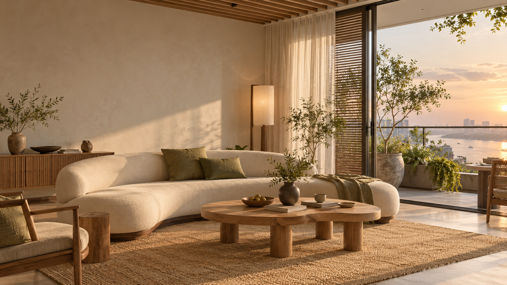
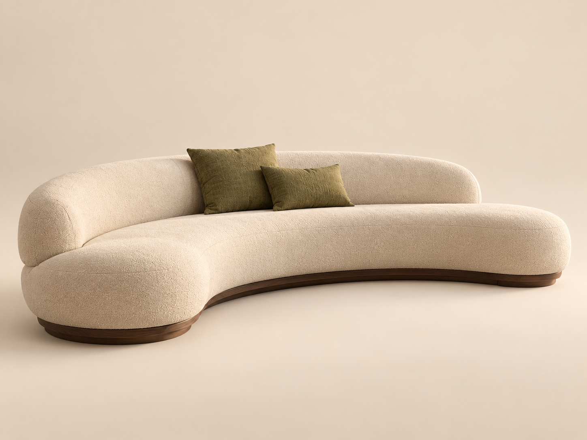

Hồ sơ ý tưởng · căn hộ ven sông
Nếp sống
bên sông
Japandi / Phòng khách

Japandi / Phòng khách
Ảnh minh họa ý tưởng bằng AI
DEMO — vật liệu và tỷ lệ phối màu là đề xuất minh họa.
Ánh sáng qua rèm mỏng, chạm lên vải kem và gỗ sồi. Đường cong sofa mở câu chuyện về mặt nước: ít đồ, đủ chỗ ngồi và một góc tĩnh để đọc.
Tỷ lệ định hướng thị giác, không phải khối lượng thi công.
M1 / Vải kem
Bọc sofa, cảm giác mềm và sáng.
M2 / Gỗ tông sồi
Bàn nước và đồ gỗ sáng, hoàn thiện mờ.
M3 / Khoáng màu be
Nền không gian, bề mặt tiết chế.
M4 / Vải olive
Gối nhấn, nối nội thất với cây xanh.
Mẫu vật liệu thực tế cần chốt sau khảo sát.
Ảnh minh họa ý tưởng bằng AI. Các món trong ảnh ngoài 01–02 không nằm trong khái toán.
DEMO — bố trí minh họa; cần khảo sát lối đi, cửa và hướng nắng thực tế.
Sofa cong tạo tâm sinh hoạt; bàn thấp giữ trường nhìn thoáng. Giữ lối ra ban công liên tục, dùng rèm mỏng làm dịu nắng chiều và đèn bổ sung khi đọc.
39.640.000 VND
Giá giả định. Rèm, đèn, thảm, ghế phụ, trang trí và hoàn thiện chỉ minh họa.

Ảnh minh họa ý tưởng bằng AI; không phải bản vẽ sản xuất.
Đường cong mềm, tựa liền mạch và đế gỗ thấp. Vải kem kết hợp gối olive giữ nhịp màu với phối cảnh.
33.440.000 VND
DEMO. Chiều sâu, chiều cao và kết cấu cần xác nhận khi triển khai thật.
| Mã / Hạng mục | Khối lượng | Đơn giá / VND | Thành tiền / VND |
|---|---|---|---|
| 01 · Sofa cong | 3,8 md | 8.800.000 | 33.440.000 |
| 02 · Bàn nước | 1 cái | 6.200.000 | 6.200.000 |
39.640.000 VND
Mọi giá, khối lượng và kích thước là giả định.
Không xác định phần VAT bên trong giá vì chưa có thuế suất thực tế.
Chỉ sofa 01 và bàn nước 02 nằm trong khái toán. Các món khác trong ảnh và phần hoàn thiện không thuộc phạm vi tính giá.
Vận chuyển, lắp đặt và điều kiện thực tế sẽ thống nhất ở báo giá chính thức; demo không tự tính thêm khoản phí.
Không xác lập hiệu lực báo giá, tiến độ, bảo hành hoặc thanh toán. Đây là hồ sơ ý tưởng, không dùng đặt hàng hay thi công.
DEMO · KHÔNG CHIẾT KHẤUĐo không gian, kiểm tra lối vận chuyển và hướng nắng.
Duyệt mẫu vải, gỗ, hình dáng và kích thước thực tế.
Chốt khối lượng, VAT, phạm vi, điều kiện và tiến độ.
Duyệt bản vẽ, kiểm tra hoàn thiện và nghiệm thu.
Bước tiếp theo: xác nhận hiện trạng và mẫu vật liệu.
Quy trình demo; chưa cam kết ngày hoặc thời lượng.
Ảnh minh họa ý tưởng bằng AI · DEMO